Abundance Plots¶
[1]:
import numpy
import mgkit.plots
import mgkit.plots.abund
import seaborn as sns
import pandas as pd
[2]:
n = 10
p = 0.50
size = 20
[3]:
data = pd.DataFrame({
'S1': numpy.random.negative_binomial(n, p, size),
'S2': numpy.random.negative_binomial(n, p + 0.1, size),
'S3': numpy.random.negative_binomial(n, p - 0.1, size),
})
Triangle Plot¶
Grid¶
[4]:
# First we need to draw the triangle grid
# aspect should be equal to ensure that the triangle sides have the same length
fig, ax = mgkit.plots.get_single_figure(figsize=(10, 10), aspect='equal')
# the labels passed are first drawn from bottom-left, then bottom-right and finally top
mgkit.plots.abund.draw_triangle_grid(ax, labels=data.columns)
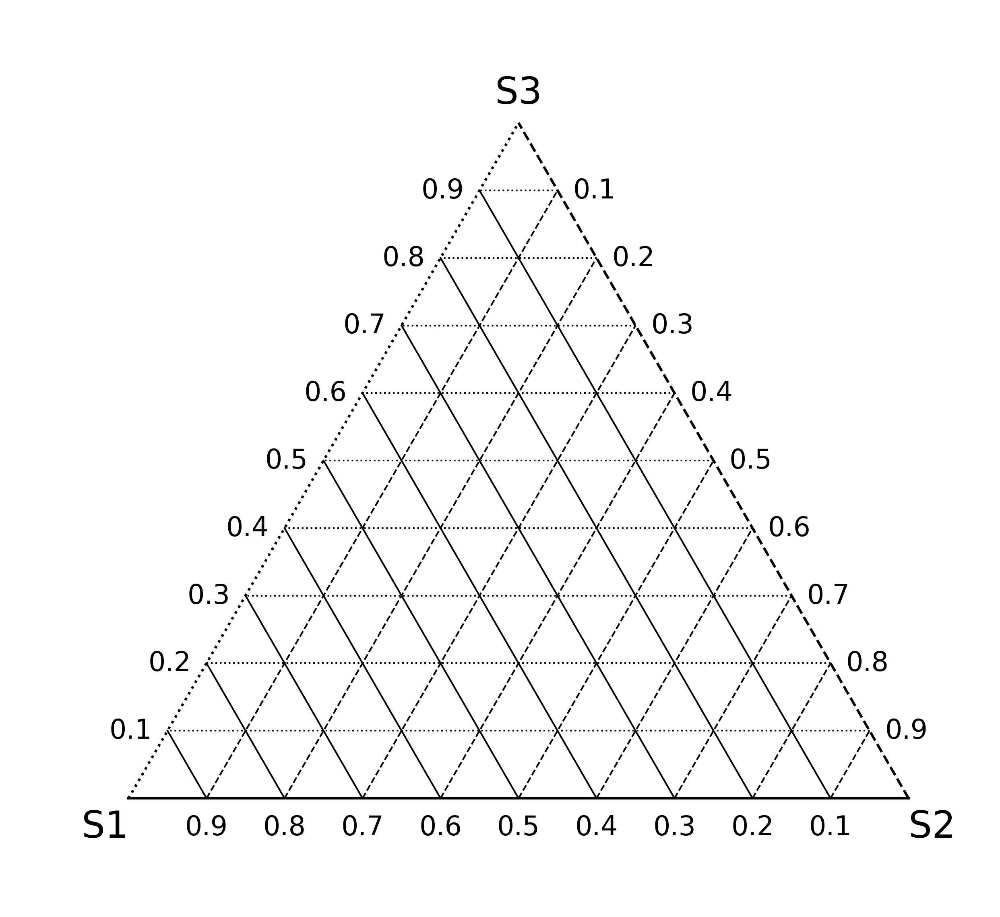
[5]:
fig, ax = mgkit.plots.get_single_figure(figsize=(10, 10), aspect='equal')
# the style can be customised by passing the appropriate matplotlib line markers with the styles parameter
mgkit.plots.abund.draw_triangle_grid(ax, labels=data.columns, styles=['--', '-.', '-'])
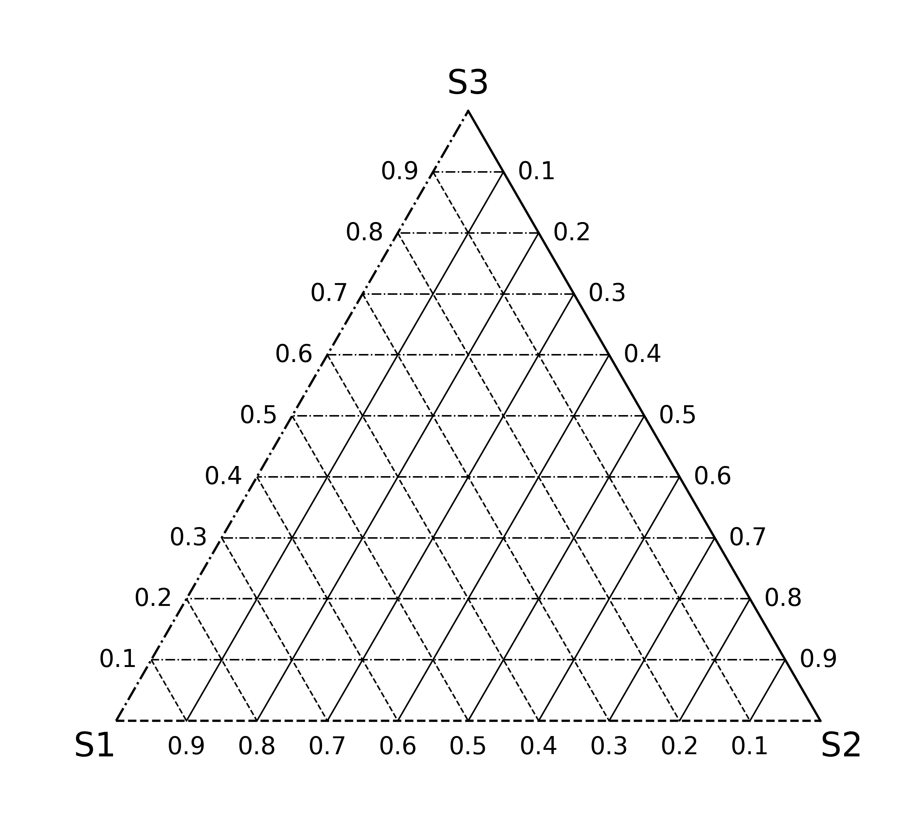
[6]:
fig, ax = mgkit.plots.get_single_figure(figsize=(10, 10), aspect='equal')
# The axis can be set to solid lines and the internals to dotted by passing None as styles value
mgkit.plots.abund.draw_triangle_grid(ax, labels=data.columns, styles=None)
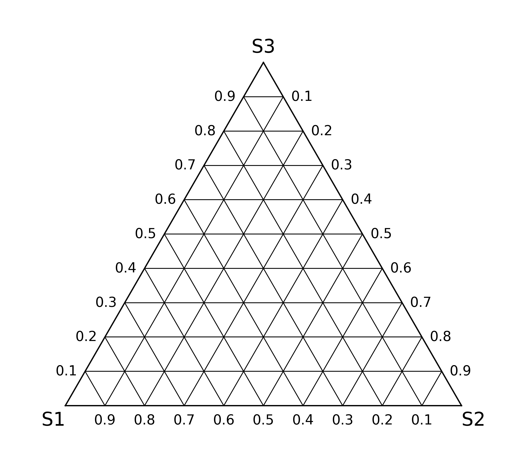
Plot¶
[7]:
fig, ax = mgkit.plots.get_single_figure(figsize=(10, 10), aspect='equal')
mgkit.plots.abund.draw_triangle_grid(ax, labels=data.columns)
# this function accept matrices with either two or three columns
mgkit.plots.abund.draw_circles(ax, data)
[7]:
<matplotlib.collections.PathCollection at 0x7f9d082be8d0>
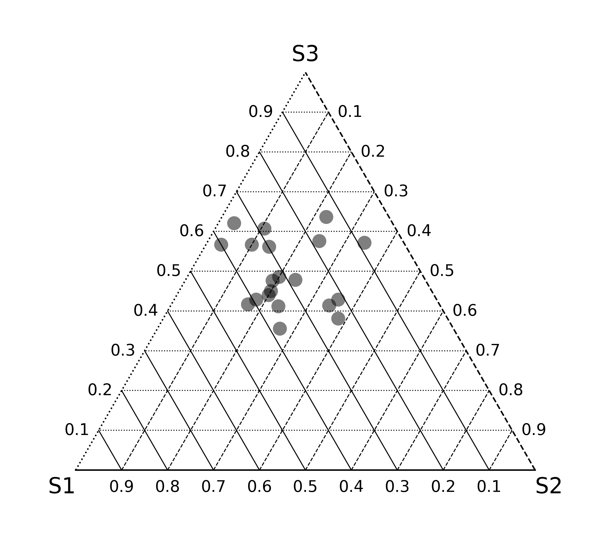
[8]:
fig, ax = mgkit.plots.get_single_figure(figsize=(10, 10), aspect='equal')
mgkit.plots.abund.draw_triangle_grid(ax, labels=data.columns)
# col_func is any function that accept a value (an element of data.index) and returns a valid matplotlib color for it
col_func = lambda x: sns.color_palette('hls', len(data))[x]
mgkit.plots.abund.draw_circles(ax, data, col_func=col_func)
[8]:
<matplotlib.collections.PathCollection at 0x7f9cf6e87290>
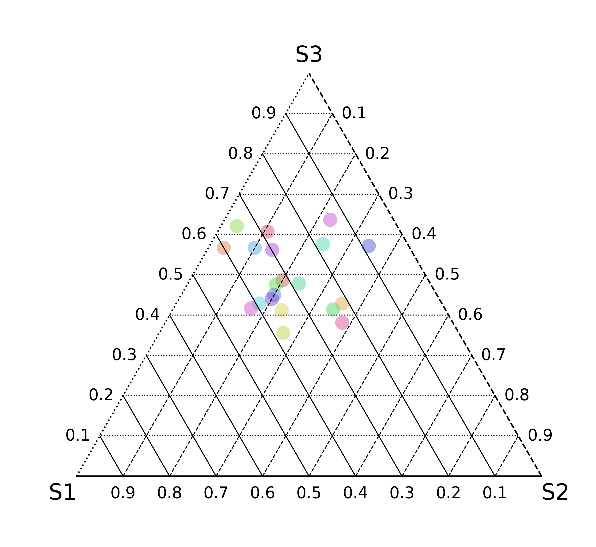
[9]:
fig, ax = mgkit.plots.get_single_figure(figsize=(10, 10), aspect='equal')
mgkit.plots.abund.draw_triangle_grid(ax, labels=data.columns)
# csize is the base size for the circle
mgkit.plots.abund.draw_circles(ax, data, col_func=col_func, csize=500)
[9]:
<matplotlib.collections.PathCollection at 0x7f9cf3581390>
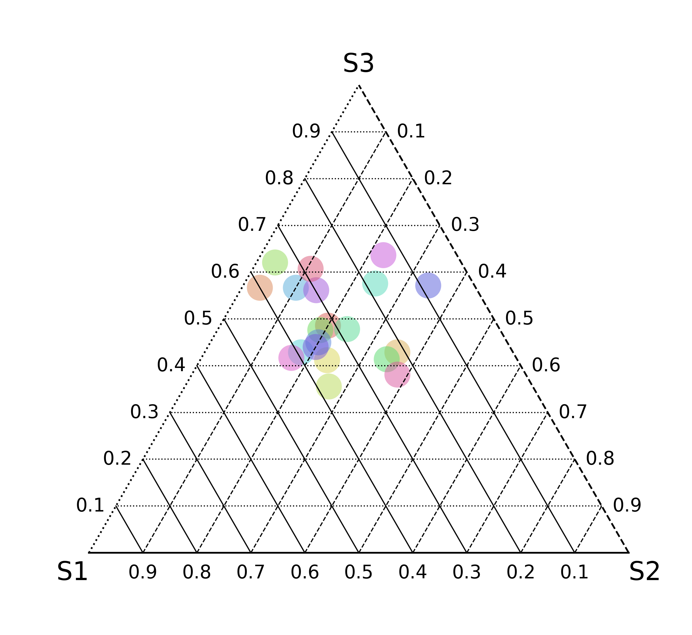
[10]:
fig, ax = mgkit.plots.get_single_figure(figsize=(10, 10), aspect='equal')
mgkit.plots.abund.draw_triangle_grid(ax, labels=data.columns)
# the sizescale parameter allows to specify a size factor for each row that is multiplied to the csize parameter
sizescale = pd.Series(numpy.random.random(20) * 3)
mgkit.plots.abund.draw_circles(
ax,
data,
col_func=lambda x: sns.color_palette('hls', len(data))[x],
csize=500,
sizescale=sizescale
)
[10]:
<matplotlib.collections.PathCollection at 0x7f9d084bed50>
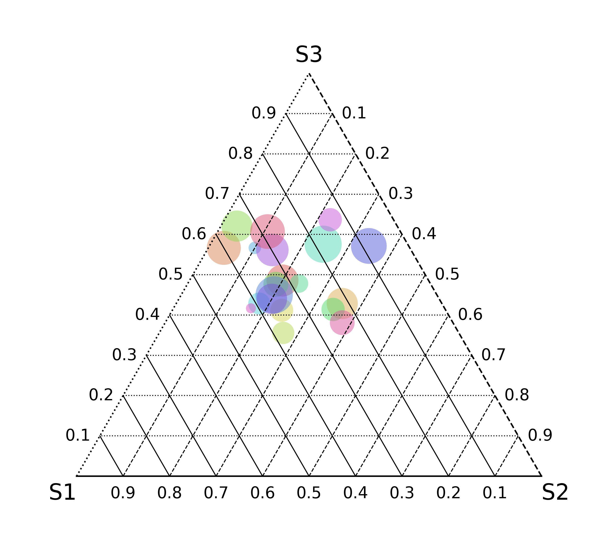
[11]:
fig, ax = mgkit.plots.get_single_figure(figsize=(10, 10), aspect='equal')
mgkit.plots.abund.draw_triangle_grid(ax, labels=data.columns)
# the order parameter can be used to only plot only a subset of the point
mgkit.plots.abund.draw_circles(
ax,
data,
col_func=col_func,
csize=500,
sizescale=sizescale,
order=data.index[:10]
)
[11]:
<matplotlib.collections.PathCollection at 0x7f9d0ce98110>
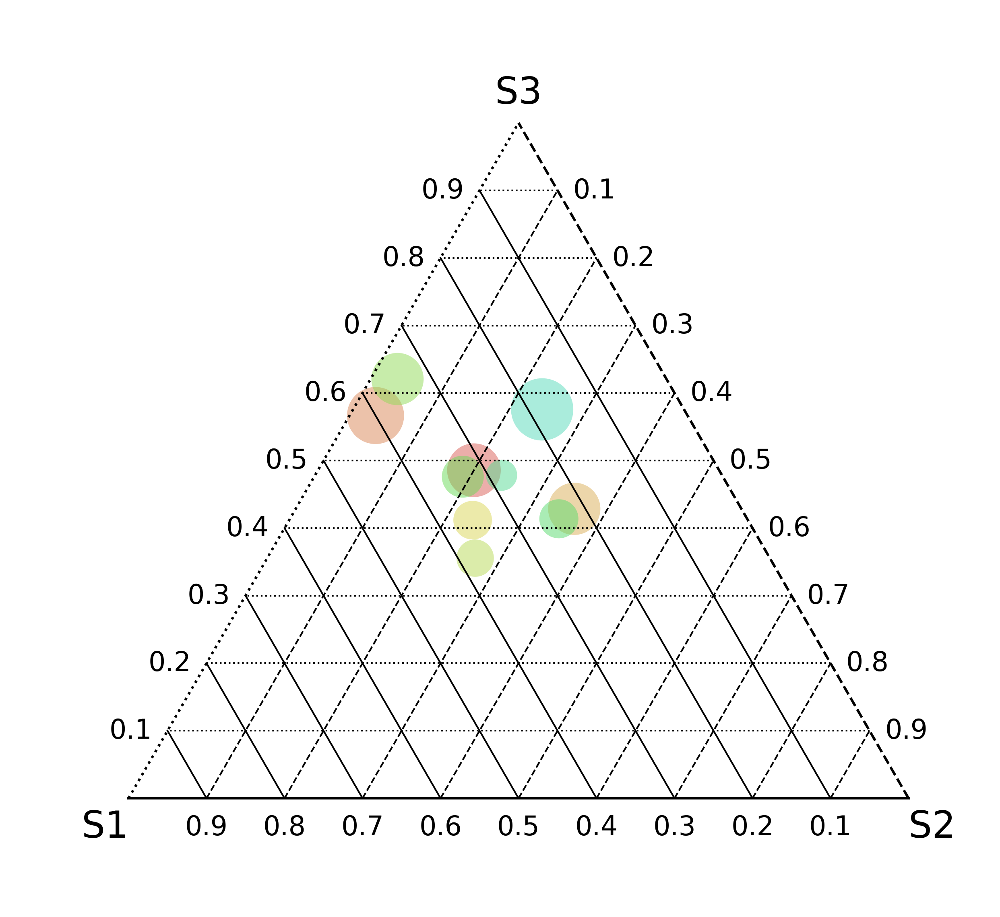
[12]:
fig, ax = mgkit.plots.get_single_figure(figsize=(10, 10), aspect='equal')
mgkit.plots.abund.draw_triangle_grid(ax, labels=data.columns)
# or also to make sure bigger circles are drawn first, below smaller ones
mgkit.plots.abund.draw_circles(
ax,
data,
col_func=col_func,
csize=500,
sizescale=sizescale,
order=sizescale.sort_values(ascending=False, inplace=False).index
)
[12]:
<matplotlib.collections.PathCollection at 0x7f9d0842f710>
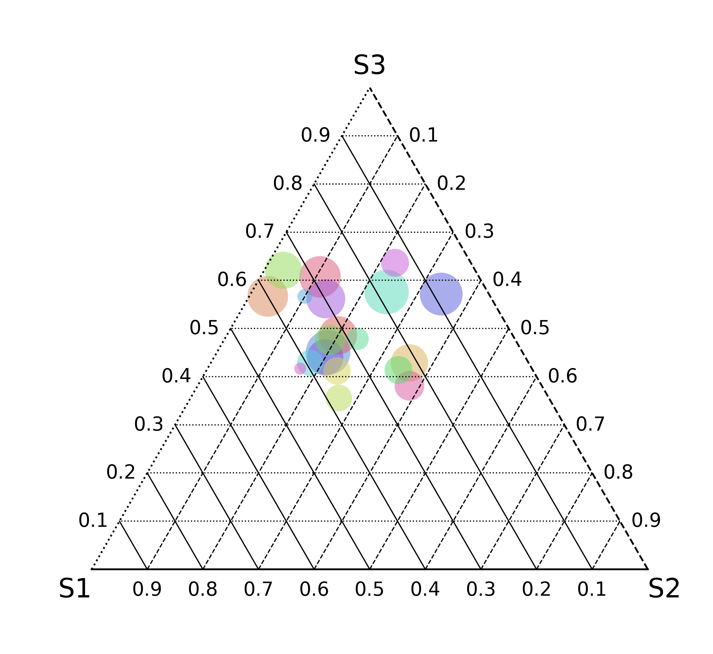
[13]:
fig, ax = mgkit.plots.get_single_figure(figsize=(10, 10), aspect='equal')
mgkit.plots.abund.draw_triangle_grid(ax, labels=data.columns)
# trasparency of circles can be adjusted with the alpha parameter (between 0 and 1)
mgkit.plots.abund.draw_circles(
ax,
data,
col_func=col_func,
csize=500,
sizescale=sizescale,
order=sizescale.sort_values(ascending=False, inplace=False).index,
alpha=1
)
[13]:
<matplotlib.collections.PathCollection at 0x7f9d0aa5abd0>
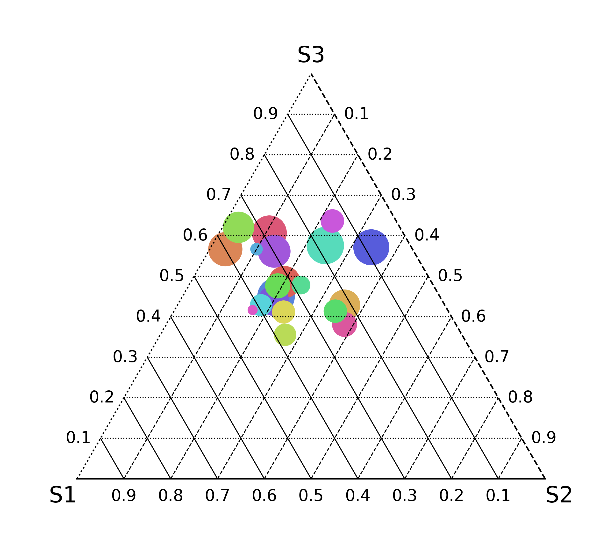
[14]:
fig, ax = mgkit.plots.get_single_figure(figsize=(10, 10), aspect='equal')
mgkit.plots.abund.draw_triangle_grid(ax, labels=data.columns)
# if lines are required around the circles, linewidths and edgecolor can be used to customise them
mgkit.plots.abund.draw_circles(
ax,
data,
col_func=col_func,
csize=500,
sizescale=sizescale,
order=sizescale.sort_values(ascending=False, inplace=False).index,
linewidths=1,
edgecolor='k'
)
[14]:
<matplotlib.collections.PathCollection at 0x7f9d0a9600d0>
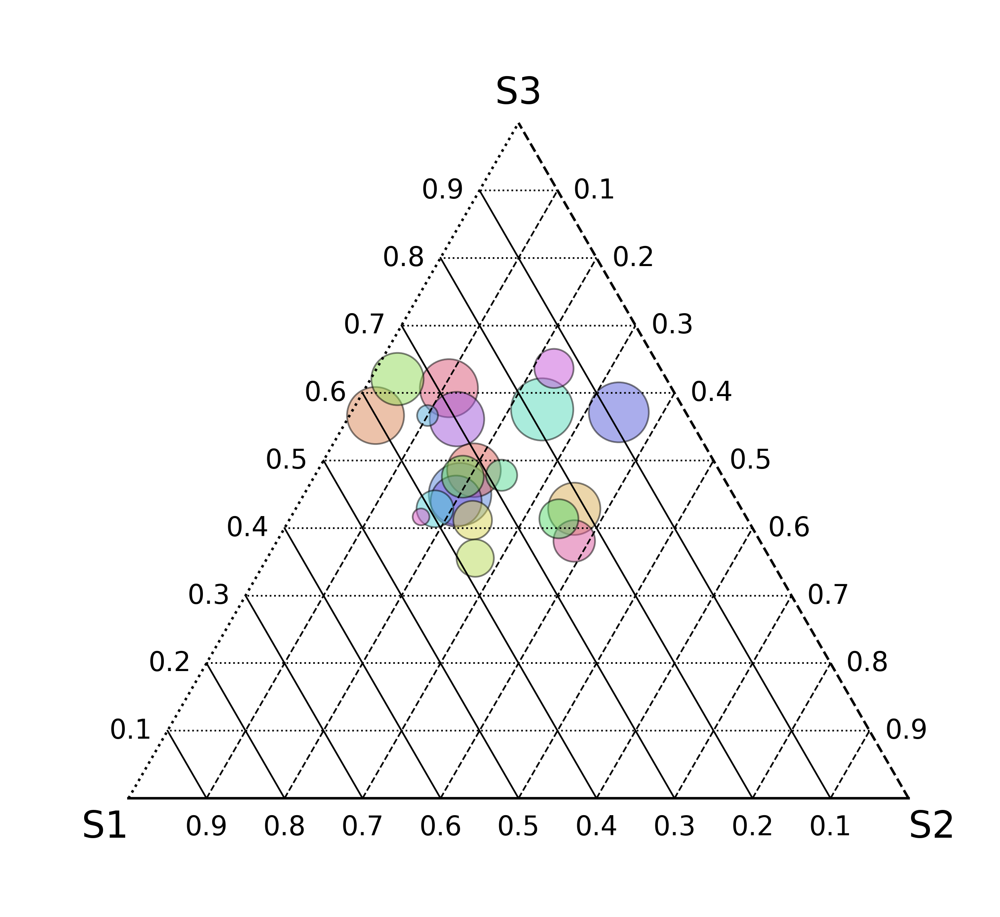
Abundance Plot with 2 Samples¶
Grid¶
[15]:
# First we need to draw the 1D grid
# aspect should be set to make sure the correct aspect ratio is drawn
fig, ax = mgkit.plots.get_single_figure(figsize=(10, 3), aspect=0.1)
# the labels passed are drawn from left to right
mgkit.plots.abund.draw_1d_grid(ax, labels=data.columns[:2])
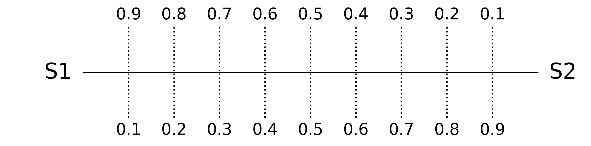
[16]:
fig, ax = mgkit.plots.get_single_figure(figsize=(10, 3), aspect=0.1)
mgkit.plots.abund.draw_1d_grid(ax, labels=data.columns[:2])
mgkit.plots.abund.draw_circles(
ax,
data.iloc[:, [0,1]],
col_func=col_func,
csize=500,
sizescale=sizescale,
order=sizescale.sort_values(ascending=False, inplace=False).index,
linewidths=1,
edgecolor='k'
)
[16]:
<matplotlib.collections.PathCollection at 0x7f9d0a837a50>
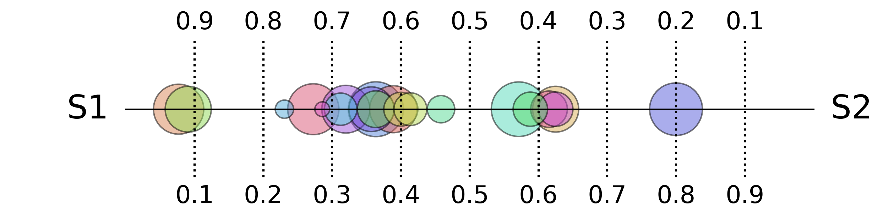